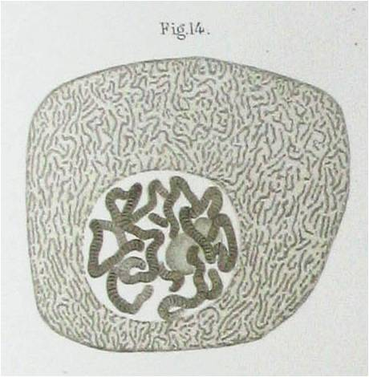
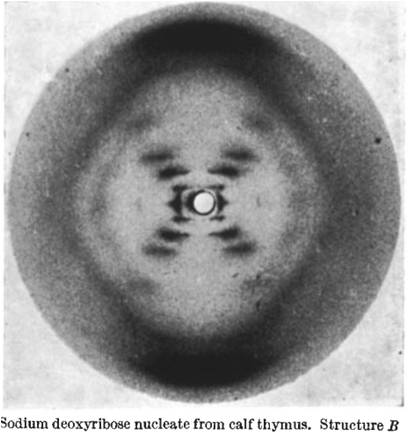

Depuis l’Antiquité, les philosophes et scientifiques se posent des questions sur l’hérédité. Ainsi, le médecin grec Claude Galien, qui vécut entre 130 et 201, rapporta dans ses écrits des témoignages dans lesquels se trouve notamment celui d’une femme blanche qui dit à son mari blanc lui aussi avoir accouché d’un métis à cause du portrait d’un éthiopien qui était accroché au dessus de leur lit et qu’elle aurait regardé au moment décisif.
Quelques années auparavant, Aristote émettait les premières hypothèses sur l’hérédité. Pour lui, la transmission parent-enfant est bien réelle mais sa théorie est encore quelque peu éloignée de la réalité. Selon Aristote : « De parents mutilés naissent des enfants mutilés, par exemple de boiteux naissent des boiteux, d’aveugles des aveugles ». Cependant il considère que seul l’homme possède des caractères héréditaires tandis que la femme possède uniquement une fonction nourricière.
Il a fallu attendre quelques siècles avant de vraiment commencer à percer les mystères de l’hérédité et c’est au 19ème siècle que nous allons commencer l’aventure de l’ADN.
Mendel ou les fondations de la génétique
En 1822 naquit, dans un village de l’empire autrichien, un petit paysan du nom de Johann Mendel. Ce dernier s’avéra très vite être un petit garçon plein de ressources et très intelligent. Le prêtre du village décida alors de lui permettre de poursuivre ses études dans un monastère, au sein duquel il sera ordonné prêtre et prendra le prénom de Gregor.
Au cours de ses études, il rencontra Franz Unger, botaniste de formation, qui avait un grave problème. Il en fit part à Mendel, probablement dans ces termes :
« Ach, je ne comprends pas pourquoi mes petits pois lisses sont devenus ridés à la génération suivante. Peut-être pourrais-tu faire une expérience pour comprendre ce phénomène ? »
. Mendel opina du chef. De retour à l’abbaye il créa un jardin expérimental dans lequel il fit pousser des petits pois jusqu’en 1865, année au cours de laquelle il publia ses résultats dans un article intitulé Recherche sur des hybrides végétaux ». De ses résultats il en sortit 3 lois qui sont les fondations de la génétique moderne.
Avant de vous décrire ces lois, un petit rappel. Chaque individu contient pour chaque chromosome, une copie de celui de son père et une copie de celui de sa mère. A l’époque de Mendel cette notion était encore inconnue. Il décrit donc ce qu’il observe avec le terme facteur. Il dira par exemple le facteur jaune ou le facteur vert pour décrire ce qui est à l’origine de la couleur de ses petits pois. Et à partir de ses observations, il a déduit que “l’enfant” contient un facteur de chaque parent et a pu écrire ses 3 lois :
la loi dite d’uniformité des hybrides de 1ère génération qui décrit les caractères dominants et récessifs. Il a déduit cette loi en croisant une lignée pure de petit pois à graines lisses avec une lignée pure de petits pois à graines ridées. La génération suivante il a obtenu uniquement des petits pois à graines lisses. Il a donc décrit ce caractère comme dominant sur le caractère graine lisse qui est lui récessif. Un exemple assez connu de caractère dominant et récessif concerne le daltonisme chez l’Homme comme l’a bien décrit Alan dans un précédent dossier de Podcast Science.
la deuxième loi est la loi dite de disjonction des allèles. La génération qu’il a obtenue précédemment, contenant uniquement des pois à graines lisses, s’est auto-reproduite. La génération suivante est composée de 3/4 de petits pois à graines lisses et 1/4 de petits pois à graines ridées. On a donc bien une séparation des “facteurs”, comme Mendel les appelle, lors de la fécondation.
Enfin la troisième loi est la loi dite d’indépendance des caractères. Il observa en effet que les caractères couleur (jaune ou vert) et forme (ridés ou lisses) ne sont pas liés et qu’on peut trouver aussi bien des petits pois jaune lisse comme jaune ridé en seconde génération par exemple. Mendel fit là, sans le savoir, la première observation que chaque caractère est créé par des gènes différents.
Ces lois ont posé les fondations de la génétique du 20ème siècle. Cependant les travaux de Mendel ont été assez critiqués.
Tout d’abord par les moines du monastère de Mendel qui en avaient marre de manger de la soupe de petits pois à chaque repas !
Mais surtout par plusieurs chercheurs au cours du 20ème siècle. Les lois que Mendel a décrites sont des lois statistiques. Or Ronald Fisher, mathématicien émérite, démontra en 1936 que les résultats de Mendel étaient beaucoup trop beaux et proches de la théorie pour être vrais. La revue d’horticulture Hort Science a émis une critique des travaux de Mendel dans un petit article cocasse publié en 1972 et traduit dans le livre de Michel de Pracontal “L’imposture scientifique en 10 leçons” :
« Au commencement était Mendel, ruminant ses pensées solitaires. Puis il dit : « Qu’il y ait des pois » et il y eut des pois, et cela était bon. Puis il mit ces pois dans le jardin et leur dit : « Croissez et multipliez-vous (…)» Ainsi firent-ils et cela était bon. (…) Puis advint que Mendel rassembla ses pois et les sépara en graines rondes et ridées (…) il vit alors qu’il y avait 450 pois ronds et 102 pois ridés. Cela n’était pas bon. Car la loi stipule qu’il doit y avoir 3 ronds pour un ridé. Mendel, pris d’un juste courroux, frappa sur la table et dit : « Eloignez-vous de moi, pois maudits et diaboliques, retournez dans les ténèbres où vous serez dévorés par les rats et les souris ! » et il en fut ainsi ; il ne resta plus que 300 pois ronds et 100 pois ridés, et cela était bon. Excellent, même. Et Mendel le publia. »
Cependant, malgré ces critiques, les lois de Mendel n’ont jamais été remises en cause. La génétique moderne était née.
Friedrich Miescher, l’homme qui posa la première pierre
En 1869, Friedrich Miescher, brillant scientifique suisse, découvre ce qu’il appelle « la nucléine » (l’ADN d’aujourd’hui). Il l’isole, pour la première fois, à partir de leucocytes (globules blancs) puis retrouve cette molécule dans d’autres cellules telles que des cellules du rein, du foie, de levure, ou encore d’œuf de poule. « Un nouveau facteur a été découvert. Ce dernier semble être essentiel à la vie du plus basique au plus évolué des organismes » conclut-il dans une lettre adressée à ses proches.
Miescher se tourne ensuite vers l’analyse du sperme de saumon. Il remarque alors la présence d’une quantité importante de « nucléine » dans ces cellules. Dans une lettre adressée à son collègue Rudolf Boehm, il expose l’hypothèse qu’il a tiré de son observation : « Au bout du compte, j’ai l’intuition que « la nucléine » n’est pas uniquement utile pour la physiologie du sperme mais qu’elle joue un rôle beaucoup plus important »
Malheureusement, avec les connaissances scientifiques de l’époque, Miescher n’a pas réussi à concevoir que « la nucléine » puisse à elle seule expliquer la différence physique entre les individus et entre les différentes espèces animales. Il arrive donc à la conclusion, erronée, que le mouvement particulier du spermatozoïde ou « l’activation de l’ovocyte par une impulsion nerveuse, lui conférant des propriétés physiques et chimiques différentes » étaient responsables de l’hérédité.
En 1874, il publie un article dans lequel il accumule des preuves contre le fait que « la nucléine » est responsable de l’hérédité. Ceci entraîne la chute de nombreux autres scientifiques qui s’étaient concentrés sur cette molécule et avaient trouvés des résultats plutôt intéressants. La communauté scientifique entière perd alors la foi en l’ADN.
En 1882, Walther Flemming observe pour la première fois au microscope ce qui sera appelé quelques années plus tard des chromosomes. Le mot chromosome vient du grec ancien khroma : couleur et soma : corps. Ils ont été appelés comme cela car la coloration que Flemming utilisait pour observer les cellules au microscope se fixait sur les chromosomes. Il observa ensuite le devenir des chromosomes tout au long de la division cellulaire et notamment le fait que les paires de chromosomes de la cellule mère se séparaient en deux, qu’un de ces chromosomes allait dans chaque cellule fille et que la cellule fille copiait le chromosome de la mère pour en avoir une paire identique à celle de la cellule mère. Cependant il ne réussit pas à faire le lien entre les chromosomes et l’hérédité.
 Dessin de chromosomes dans le noyau par Flemming en 1882
Comment les scientifiques sont revenus sur l’ADN ? Qui a utilisé pour la première fois le mot « gène » ? Comment ont-ils réussis à lier l’ADN et l’hérédité ? Le 20ème siècle a répondu à ces questions.
En 1909, un biologiste danois, du nom de Wilhelm Johannsen, effectue, 45 ans après Mendel, des recherches sur les caractères héréditaires des haricots. Il publie ses résultats dans le journal « The american naturalist ». Dans cet article, il arrive à la conclusion que la transmission des caractéristiques physiques, de génération en génération, est due à des petits éléments présents dans la cellule. Il décide alors de créer un nouveau mot pour les baptiser et les appelle « gène ».
Pourquoi avoir créé ce nouveau mot ? Il explique dans son article que « Le langage n’est pas seulement notre serviteur, quand nous voulons exprimer nos pensées, mais il peut aussi être notre maître, nous écrasant par les notions attachés aux mots déjà existants. Les vieux mots sont souvent compromis par leur utilisation dans des théories dépassées ou erronées ». Il émet des hypothèses plutôt intéressantes de l’analyse de ses résultats, notamment le fait qu’un caractère pourrait être contrôlé par plusieurs gènes. Cependant, pour Johannsen, les gènes ne sont pas portés par les chromosomes qui ont été découverts un peu plus tôt, et « aucun résultat ne permet d’émettre une hypothèse sur la nature des gènes ». Il conclut enfin son article « trop long pour son contenu réel, mais trop court pour l’importance du grand problème qu’est l’hérédité » par le fait que « l’hérédité peut être définie par la présence de gènes identiques entre les ancêtres et les descendants ».
La nature de ces gènes a été découverte 35 ans plus tard. En 1944, Oswald Theodore Avery et ses collègues ont effectué une expérience qui a permis, pour la première fois, d’effectuer le lien entre ADN et gène. Au cours de cette expérience, ils ont utilisé deux types différents de bactéries pneumococcus : la souche R qui est inoffensive et la souche S qui provoque des pneumonies. Une expérience précédente avait montré que, lorsque l’on fait chauffer les bactéries S à 60°C, ces dernières deviennent inoffensives. Cependant quand on mélange ces bactéries inactives avec des bactéries R, ces dernières deviennent alors capables d’induire des pneumonies.
Avery s’est alors demandé ce qui pouvait changer la nature des bactéries. Il a récupéré une solution contenant les protéines, l’ADN et l’ARN des bactéries S, puis a mélangé cette solution avec des bactéries R. Ces dernières ont alors provoqué des pneumonies. Il a ensuite détruit les protéines, testé la nouvelle solution ARN-ADN, puis il a détruit les ARN et testé la solution d’ADN pur. Après analyse des résultats, il en conclut que l’ADN des bactéries S a donné la capacité de provoquer des pneumonies aux bactéries R.
Ce fut la première expérience qui montra le rôle essentiel de l’ADN dans la transmission héréditaire entre individus.
Schéma de l'expérience effectuée par Avery en 1944
Les pièces du puzzle commençaient à se mettre en place petit à petit. Les scientifiques de l’époque ont alors cherché à découvrir la structure de l’ADN. Cette dernière a été découverte en 1953 par l’américain James Watson et l’anglais Francis Crick qui ont eu un prix Nobel pour cela en 1962. Pour l’anecdote, le premier dessin de la structure en double hélice de l’ADN, publié dans le petit article de Watson et Crick en 1953, fut réalisé par la femme de Crick, Odile qui, peintre de profession, est essentiellement connue pour cette réalisation.
Cette découverte aurait certainement été impossible sans Rosalind Franklin, cette grande scientifique oubliée, qui mourut malheureusement bien jeune. Au début des années 1950, elle travaillait dans le laboratoire du physicien John Randall. Rosalind Franklin et Maurice Wilkins menaient chacun de leur côté dans ce laboratoire une équipe travaillant sur l’ADN. Au cours de ses recherches Franklin effectua la première photographie de la structure de l’ADN par diffraction de rayon X. Il s’agit de la fameuse photo 51. Elle était alors sur le point de découvrir la structure de la molécule d’ADN. Cependant, Maurice Wilkins montra la photo à ses amis Watson et Crick sans en informer Rosalind Franklin. A-t-il agit par jalousie, machisme peut être ou simplement parce qu’il ne s’entendait pas avec Rosalind Franklin ? Une chose est sûre en tout cas : le nom de Rosalind Franklin apparaît uniquement dans les remerciements sur l’article de Watson et Crick. Elle décéda en 1958 d’un cancer des ovaires, 4 ans avant que Watson, Crick et Wilkins n’aient le prix Nobel. Son rôle dans la découverte de la structure de l’ADN fut mis en avant quelques années plus tard par Watson et Crick dans des livres et interviews.
Aujourd’hui, la Royal Society décerne un prix Rosalind Franklin afin de promouvoir le rôle des femmes dans la science.
Schéma de l'expérience effectuée par Avery en 1944
La structure de l’ADN ayant été découverte, les scientifiques ont essayé par la suite de cracker le code afin de découvrir les secrets que recèle cette molécule. Dans ce but, le russe George Gamow créa une fraternité regroupant plusieurs scientifiques de renom. Pour l’anecdote, chaque membre de la fraternité avait un petit nom de code constitué des premières lettres des acides aminés formant les protéines : Crick était TYR pour Tyrosine, Watson PRO pour Proline…Cependant ce n’est pas un membre de ce club privé qui déchiffra le code de l’ADN.
Petit aparté à ce niveau pour rappeler les bases du code génétique. La traduction de l’ADN fonctionne comme le chantier de votre maison par exemple. On peut comparer l’ADN aux plans de l’architecte. Comme le plan d’architecte qui contient toutes les informations nécessaires pour construire une maison, l’ADN contient l’information pour « créer » et « gérer » un être vivant. Le code de l’ADN est composé d’une répétition de 4 bases azotées qui sont A pour adénine, T pour Thymine, C pour Cytosine et G pour Guanine.
Le plan de l’architecte est ensuite lu et transcrit par le chef de chantier. On peut alors le comparer à l’ARN qui est une transcription de l’ADN dans nos cellules. L’ARN est également constitué d’une répétition de 4 bases azotées qui sont l’adénine, la cytosine, la guanine et l’uracile.
Enfin le chef de chantier traduit le plan pour les ouvriers qui effectuent alors les travaux. Ces ouvriers peuvent être comparés aux protéines. Dans la cellule, l’ARN est traduit en protéine, et c’est ce code là que les scientifiques essayaient alors de briser. Les protéines sont constituées de 22 acides aminés qui sont reliés entre eux par des liaisons dites peptidiques. Je ne vous citerai pas ici tous les acides aminés de peur d’être rébarbatif.
Revenons à nos moutons. En 1961, Marshall Nirenberg et Johann Matthaei déchiffrèrent pour la première fois une partie du code génétique. Pour cela, ils ont utilisé un système sans cellules ou « cell free ». Ce système a consisté à mettre dans un tube à essai tout ce qu’ils considéraient comme étant nécessaire pour créer une protéine. Ils ont ensuite rajouté des séquences d’ARN composé uniquement d’une seule base. La première séquence d’ARN utilisée ne contenait que des U ou uracile (pour info, l’uracile est l’« équivalent » de la Thymine (T) de l’ADN). Ils ont alors obtenu une protéine composée d’une répétition d’un seul acide aminé : la phenylalanine. La première traduction du code génétique était effectuée : UUU = Phenylalanine. Ils ont alors recommencé avec une séquence d’ARN ne contenant que des C et observèrent que la répétition CCC code pour la Proline. L’apport de Har Gobind Khorana, chercheur indien travaillant aux Etats-Unis fut alors décisif. En effet il fut le premier scientifique à créer un ARN synthétique en choisissant précisément la composition de sa séquence. Le premier ARN qu’il créa était composé d’une répétition des bases UCUCUC. Il a alors obtenu une protéine composée d’une répétition du couple d’acide-aminé Sérine-Leucine. A partir de ce moment, le code génétique pouvait être entièrement déchiffré. Nirenberg et Khorana ont obtenu le prix Nobel pour cette découverte en 1968.
Tableau code génétique
2e nucléotide
T
C
A
G
1er nucléotide
T
TTT
phénylalanine
TCT
sérine
TAT
tyrosine
TGT
cystéine
T
3e nucléotide
TTC
TCC
TAC
TGC
C
TTA
leucine
TCA
TAA
codon-stop
TGA
codon-stop
A
TTG
TCG
TAG
TGG
tryptophane
G
C
CTT
leucine
CCT
proline
CAT
histidine
CGT
arginine
T
CTC
CCC
CAC
CGC
C
CTA
CCA
CAA
glutamine
CGA
A
CTG
CCG
CAG
CGG
G
A
ATT
isoleucine
ACT
thréonine
AAT
asparagine
AGT
sérine
T
ATC
ACC
AAC
AGC
C
ATA
ACA
AAA
lysine
AGA
arginine
A
ATG
méthionine
ACG
AAG
AGG
G
G
GTT
valine
GCT
alanine
GAT
acide aspartique
GGT
glycine
T
GTC
GCC
GAC
GGC
C
GTA
GCA
GAA
acide glutamique
GGA
A
GTG
GCG
GAG
GGG
G
Comment est utilisé l’ADN de nos jours ?
Parlons tout d’abord des organismes génétiquement modifiés ou OGM. Le principe de ces OGM consiste à rajouter, modifier ou enlever un gène à un organisme vivant. Le premier OGM a été créé en 1973 par Stanley Cohen et Herbert Boyer. Ces deux scientifiques américains ont introduit un gène de résistance à un antibiotique à l’intérieur d’une bactérie dénommée Eschirichia Coli. Le gène fonctionna et la bactérie devint résistante. Aujourd’hui cette technique est utilisée en routine dans les laboratoires de recherche. En 1983, les chercheurs belges Jozef Schell et Marc Van Montagu ont été les premiers à réussir la modification génétique d’une plante de tabac. Aujourd’hui les plantes génétiquement modifiées (coton, mais, riz…) sont plantées sur plus d’un quart des terres cultivées et permettent de réduire la consommation de pesticide de manière assez importante. Je ne veux cependant pas rentrer dans le débat de l’utilité des OGM, car je pense que ce sujet sera traité de manière admirable par Marc Robinson-Rechavi dans une prochaine émission. Je vous invite néanmoins à lire l’article très intéressant de Marc Van Montagu, dans le Wall Street Journal, qui est intitulé : « The irrational fear of GM foods ».
En 2012, des chercheurs d’Harvard ont réussi à copier pour la première fois un livre, traitant de génétique comme par hasard, en ADN. Ce livre contient 53 426 mots, 11 illustrations et 1 programme JAVA. Au lieu d’utiliser le système binaire informatique (1 0), les chercheurs ont utilisé pour coder ce livre le système quaternaire A, T, C et G de l’ADN. Ils ont alors synthétisé de manière complètement artificielle des morceaux d’ADN contenant des petits passages du livre. Ces morceaux, tous rassemblés, pèsent environ 1 picogramme, soit 1 trillion de fois moins qu’un gramme !!! Les morceaux d’ADN ont ensuite été séquencés et les chercheurs ont pu alors retrouver l’intégralité du livre.
En janvier 2013, l’équipe du chercheur britannique Nick Goldman a amélioré le système de stockage sur ADN. En effet, afin de réduire la perte d’information, ils ont eu l’idée de la stocker sur des petites séquences d’ADN de 117 bases chacune. Sur chaque séquence, ils ont également ajouté un petit indice permettant de correctement la situer au moment de l’assemblage final, un peu comme un numéro de page. Ils ont ainsi réussi à stocker en ADN les 154 sonnets de Shakespeare, 26 secondes audio du célèbre discours de Martin Luther King « I have a dream », une photo de leur laboratoire l’EBI à Hinxton au Royaume-Uni, l’article de Watson et Crick et une notice pour réassembler et traduire les différentes petites séquences d’ADN. Après traduction, ils ont récupéré 100% de leurs données. L’équipe de Nick Foldman estime que le stockage en ADN de chaque megabyte de données coûte environ 12400 dollars et que sa lecture coûte environ 220 dollars. Cependant on peut être confiant sur une réduction rapide des prix quand on sait que le séquençage du génome humain est passé de 3 milliards de dollars en 1990 à 1000 dollars aujourd’hui !
Ce système de stockage est donc devenu le plus sûr (pas de perte d’information avec le temps) et le plus compact de tous les systèmes déjà existants (disque dur, CD…). Je ne sais pas si vous vous rendez compte mais l’ADN est déjà aujourd’hui le plus vieux système de stockage qui existe car l’information est conservée et se propage depuis environ 3,5 milliards d’années. Certes depuis tout ce temps, il y a eu énormément de mutations dans les séquences d’ADN et cela serait dommage d’avoir, à cause des mutations, du hard rock se mélangeant avec du classique (quoique cela pourrait faire un mélange détonnant). L’ADN se conserve néanmoins de manière optimale dans des souches bactériennes dans des congélateurs à -80°C ou tout simplement dans des solutions adéquates à -20°C. Donc êtes vous prêts à stocker vos DVD au congél ?
Depuis peu, l’ADN est également utilisé en nanotechnologie. Cela a commencé tout d’abord avec les recherches de Paul Rothemund qui créa les premiers origamis en ADN (cf. article référence). Grâce aux capacités de repliement particulières de l’ADN, ce chercheur travaillant à Pasadena aux Etats-Unis, a réussi à créer les plus petit smileys au monde.
Sourire d'ADN
En effet, chaque smiley mesure 100 nanomètres de long (soit environ 1/1000ème de la largeur d’un cheveu), 2 nanomètres d’épaisseur et est composé de 14000 bases d’ADN. Paul Rothemund a réussi également à créer plusieurs autres origamis d’ADN en 2D notamment une carte du monde.
En 2009, l’équipe de Shawn Douglas du Dana Farber Cancer Institute à Boston a réussi à créer pour la première fois des nanostructures d’ADN en 3 dimensions. Son plus grand exploit reste quand même la formation d’un icosaèdre en ADN. Un icosaèdre ? kézako ? Il s’agit en fait d’une structure en 3 dimensions comportant 20 faces triangulaires. Et toutes ces structures ne mesurent que 20 à 40 nanomètres de long.
A quoi cela va-t-il servir me demanderez vous ? L’an dernier des chercheurs de l’institut McGill au Canada ont créé une nano boite d’ADN pouvant transporter un médicament à l’endroit désiré dans le corps humain. Selon les chercheurs, les nanostructures d’ADN ont plusieurs avantages : elles sont bio-dégradables, elles peuvent être construites de manière extrêmement précise et leurs tailles, formes et caractéristiques peuvent être optimisées au maximum. Ceci est difficilement possible pour toutes les autres nanotechnologies. De plus, les chercheurs imaginent dans le futur une nano boîte d’ADN capable de s’ouvrir uniquement en présence d’une protéine donnée. Ainsi par exemple on peut imaginer que la nanoboite ne s’ouvrirait qu’au contact de protéines cancéreuses, délivrant ainsi le médicament précisément au niveau de la tumeur. La nanotechnologie à base d’ADN peut être un des futurs de la thérapie ciblée.
Enfin je vais juste dire deux mots sous forme d’ouverture sur l’utilisation de l’ADN au niveau de la police scientifique et des diagnostics. En France a été mis en place le Fichier National Automatisé des Empreintes Génétiques qui a été mis en place en 1998. Aujourd’hui le fichier contient plus de 2 188 000 profils génétiques différents qui correspondent à des personnes interpellées, à des suspects, à des traces retrouvées sur les lieux de crimes…Peut-on penser que dans un futur prochain, toute personne sera enregistrée sur ce fichier ? Est-ce que les profils ADN ne seront pas utilisés à mauvais escient par des compagnies d’assurances par exemple ? Aujourd’hui le séquençage du génome humain ne coûte quasiment plus rien. Peut-on craindre de voir apparaître une nouvelle forme d’eugénisme avec la possibilité de séquencer le génome de son enfant à naître ? Est-ce qu’on ne risque pas de tomber également dans un séquençage systématique des êtres humains afin de détecter la présence de marqueurs génétiques à risque et de proposer des traitements dès le plus jeune âge, même si il y a une faible probabilité que la personne tombe malade, ou alors proposer des assurances adaptées ?
Néanmoins en tant que scientifique j’ai confiance en la recherche. Et je préfère penser au futur de l’ADN comme unité de stockage ou comme nano-transporteur de molécules. L’imagination des chercheurs est sans limite. Alors que nous réserve l’ADN à l’avenir ? Je vous donne rendez-vous dans 10 ans…
En attendant si vous voulez retrouver l’histoire intégrale de l’ADN avec toutes les étapes dont je n’ai pas parlé faute de temps, je vous conseille le site www.gene-abc.ch, un superbe site suisse très instructif.